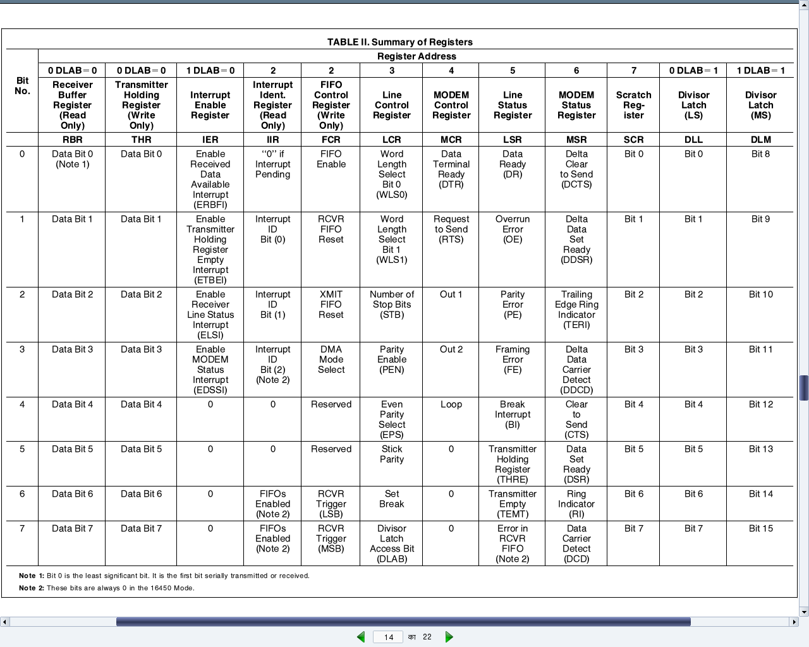

Accessing x86-specific I/O mapped hardware in Linux
This eighth article, which is part of the series on Linux device drivers, continues on talking about accessing hardware in Linux.
Second day in the Linux device drivers laboratory was expected to be quite different from the typical software oriented classes. Apart from accessing & programming the architecture-specific I/O mapped hardware in x86, it had lot to offer for first timers in reading hardware device manuals (commonly referred as data-sheets) and to understand them for writing device drivers.
Contrast this with the previous laboratory session, which taught about the generic architecture-transparent hardware interfacing. It was all about mapping and accessing memory-mapped devices in Linux, without any device specific detail.
x86-specific hardware interfacing
Unlike most other architectures, x86 has an additional hardware accessing mechanism through a direct I/O mapping. It is a direct 16-bit addressing scheme and doesn’t need a mapping to virtual address for its accessing. These addresses are referred to as port addresses, or in short – ports. As x86 has this as an additional accessing mechanism, it calls for additional set of x86 (assembly/machine code) instructions. And yes, there are the input instructions inb, inw, inl for reading an 8-bit byte, a 16-bit word, and a 32-bit long word respectively, from the I/O mapped devices through the ports. And the corresponding output instructions are outb, outw, outl, respectively. And the equivalent C functions/macros are as follows (available through the header <asm/io.h>):
u8 inb(unsigned long port);
u16 inw(unsigned long port);
u32 inl(unsigned long port);
void outb(u8 value, unsigned long port);
void outw(u16 value, unsigned long port);
void outl(u32 value, unsigned long port);
The basic question may arise, as to which all devices are I/O mapped and what are the port addresses of these devices. The answer is pretty simple. As per x86-specific, all these devices & their mappings are x86 standard and hence pre-defined. Figure 13 shows a snippet of these mappings through the kernel window /proc/ioports. The listing includes pre-defined DMA, timer, RTC, serial, parallel, PCI bus interfaces to name a few.

Simplest the serial on x86 platform
For example, the first serial port is always I/O mapped from 0x3F8 to 0x3FF. But what does this mapping mean? What do we do with this? How does it help us to use the serial port? That is where a data-sheet of the device controlling the corresponding port needs to be looked up. Serial port is controlled by the serial controller device, commonly known as an UART (Universal Asynchronous Receiver/Transmitter) or at times a USART (Universal Synchronous/Asynchronous Receiver/Transmitter). On PCs, the typical UART used is PC16550D. The data-sheet (uart_pc16550d.pdf) for the same has also been included in the self-extracting LDDK-Package.sh, used for the Linux device driver kit. Figure 14 shows the relevant portion of it.
In general, from where & how do we get these device data-sheets? Typically, an on-line search with the corresponding device number should yield their data-sheet links. And how does one get the device number? Simple, by having a look at the device. If it is inside a desktop, open it up and check it out. Yes, this is the least you may have to do to get going with the hardware for writing device drivers. Assuming all this hacking has been done, it is time to peep into the data-sheet of UART PC16550D.
For a device driver writer, the usual sections of interest in a data-sheet are the ones related to registers of the device. Why? As, it is these registers, which a device driver writer need to read from and/or write in to finally use the device. Page 14 of the data-sheet (also shown in Figure 14) shows the complete table of all the twelve 8-bit registers present in the UART PC16550D. Each of the 8 rows corresponds to the respective bit of the registers. Also, note that the register addresses start from 0 and goes till 7. The interesting thing to note about this is that a data-sheet always gives the register offsets, which then need to be added to the base address of the device, to get the actual register addresses. Who decides the base address and where is it obtained from? Base addresses are typically board/platform specific, unless they are dynamically configurable like in the case of PCI devices. In the case here, i.e. serial device on x86, it is dictated by the x86 architecture – and that is what precisely was the starting serial port address mentioned above – 0x3F8. And the eight register offsets 0 to 7 are the ones exactly mapping to the eight port addresses 0x3F8 to 0x3FF. So, these are the actual addresses to be read or written for reading or writing the corresponding serial registers, to achieve the desired serial operations, as per the register descriptions.

All the serial register offsets and the register bit masks are defined in the header <linux/serial_reg.h>. So, rather than hard coding these values from the data-sheet, the corresponding macros could be used instead. All the following code uses these macros along with the following:
#define SERIAL_PORT_BASE 0x3F8
Operating on the device registers
To summarize all these decoding of UART PC16550D data-sheet, here are a few examples of how to do read and write operations of the serial registers and their bits.
Reading and writing the “Line Control Register (LCR)”:
u8 val;
val = inb(SERIAL_PORT_BASE + UART_LCR /* 3 */);
outb(val, SERIAL_PORT_BASE + UART_LCR /* 3 */);
Setting and clearing the “Divisor Latch Access Bit (DLAB)” in LCR:
u8 val;
val = inb(SERIAL_PORT_BASE + UART_LCR /* 3 */);
/* Setting DLAB */
val |= UART_LCR_DLAB /* 0x80 */;
outb(val, SERIAL_PORT_BASE + UART_LCR /* 3 */);
/* Clearing DLAB */
val &= ~UART_LCR_DLAB /* 0x80 */;
outb(val, SERIAL_PORT_BASE + UART_LCR /* 3 */);
Reading and writing the “Divisor Latch”:
u8 dlab;
u16 val;
dlab = inb(SERIAL_PORT_BASE + UART_LCR);
dlab |= UART_LCR_DLAB; // Setting DLAB to access Divisor Latch
outb(dlab, SERIAL_PORT_BASE + UART_LCR);
val = inw(SERIAL_PORT_BASE + UART_DLL /* 0 */);
outw(val, SERIAL_PORT_BASE + UART_DLL /* 0 */);
Blinking an LED
To get a real experience of the low-level hardware access and Linux device drivers, the best way would be to play with the Linux device driver kit (LDDK). However, just for the feel of low-level hardware access, a blinking light emitting diode (LED) may be tried as follows:
Connect a light emitting diode (LED) with a 330 ohm resistor in series across the pin 3 (Tx) & pin 5 (Gnd) of the DB9 connector of your PC.
Pull up & down the transmit (Tx) line with a 500 ms delay, by loading the blink_led driver using insmod blink_led.ko, and then unloading the driver using rmmod blink_led, before reloading.
Below is the blink_led.c, to be compiled into the blink_led.ko driver, by running make using the usual driver Makefile:
#include <linux/module.h>
#include <linux/version.h>
#include <linux/types.h>
#include <linux/delay.h>
#include <asm/io.h>
#include <linux/serial_reg.h>
#define SERIAL_PORT_BASE 0x3F8
int __init init_module()
{
int i;
u8 data;
data = inb(SERIAL_PORT_BASE + UART_LCR);
for (i = 0; i < 5; i++)
{
/* Pulling the Tx line low */
data |= UART_LCR_SBC;
outb(data, SERIAL_PORT_BASE + UART_LCR);
msleep(500);
/* Defaulting the Tx line high */
data &= ~UART_LCR_SBC;
outb(data, SERIAL_PORT_BASE + UART_LCR);
msleep(500);
}
return 0;
}
void __exit cleanup_module()
{
}
MODULE_LICENSE("GPL");
MODULE_AUTHOR("Anil Kumar Pugalia <email@sarika-pugs.com>");
MODULE_DESCRIPTION("Blinking LED Hack");
Summing up
Are you wondering as where has Shweta gone today? She has bunked all the classes. Watch out for the next article to find out why.
Notes
- The above example is to demonstrate how bare bone easy the low level access could get. However, to make it more perfect, one should use the APIs request_region() and release_region(), respectively before and after the accesses of the I/O port addresses, respectively to acquire and release the range of I/O port addresses to access.
- Also, you might have observed that there is no
module_init()&module_exit()in the above driver. But nonetheless, insmod & rmmod do work. How is that? That is becauseinit_module()&cleanup_module()are the predefined names for the constructor & the destructor, respectively. Hence, you do not needmodule_init()&module_exit()to translate your other function names to these predefined ones. Caution: Since kernel 2.6 onwards, if you are building the driver into the kernel, you should define your own function names & usemodule_init()&module_exit().